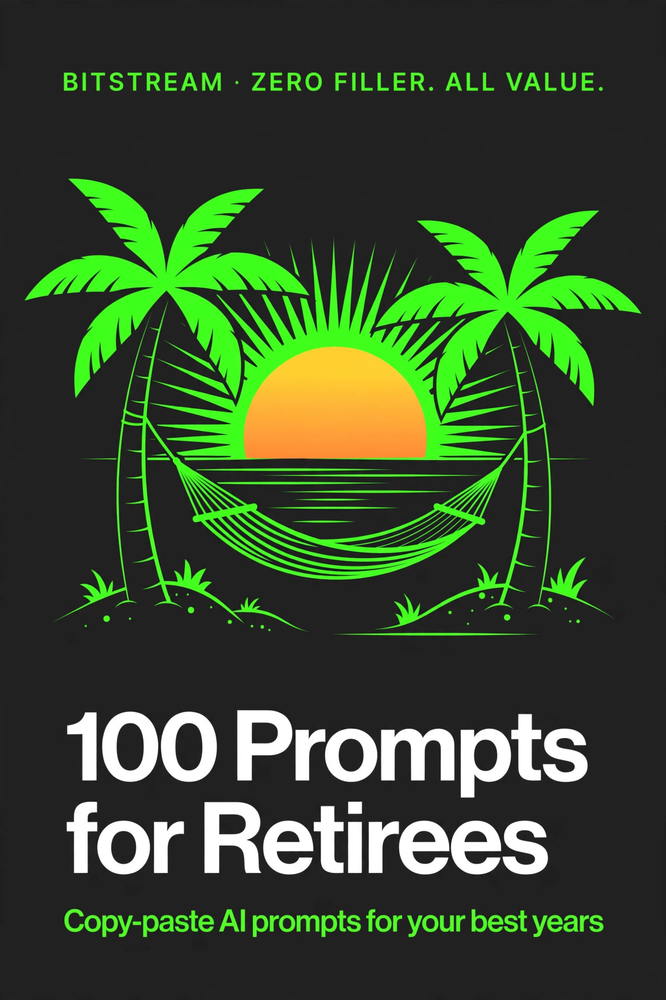

BITSTREAM · ZERO FILLER. ALL VALUE.
100 Prompts
for Retirees
100 copy-paste prompts for your best years — money, health, travel, family, and fun.
Open a free AI tool, paste, fill in the blanks, done.
ESSENTIAL PACK · $7.99
How to use this pack (60 seconds)
- Open a free AI tool — ChatGPT (chatgpt.com), Claude (claude.ai), or Gemini (gemini.google.com). No account tricks, no paid plan needed. All of them have a "voice" or "speak" button if you'd rather talk than type.
- Copy any prompt and replace the [BRACKETED] parts with your details. Copy means highlight the text, right-click, "Copy." Paste means right-click, "Paste."
- Be specific. Your budget, your health, your plans — specifics in, quality out. "Help me plan a trip" gets a generic list. "Plan a 5-day trip to Branson, Missouri for two, under $1,500, with minimal walking" gets a plan you can actually take.
- Treat the first answer as a draft. Reply with "make it simpler," "use bigger steps," or "add prices" until it's right. The AI doesn't mind being asked to redo things.
- You are the boss. AI is a helpful assistant, not a doctor, lawyer, or financial advisor. Double-check anything involving money, medicine, or legal papers with a real professional before acting.
Rule 1 — Never paste private numbers into an AI tool. No Social Security numbers, bank account numbers, or full credit card numbers. Describe your situation in general terms ("my savings account" not the account number) and you'll stay safe.
Rule 2 — AI organizes, professionals decide. AI can help you build a budget, organize your questions for a doctor, or compare Medicare plans side by side. The final decision is yours — made with your doctor, your advisor, or your family.
Rule 3 — Plain words win. You don't need to write well or know any tech terms. Describe what you want in your own words. If the AI uses words you don't understand, reply "explain that like I'm hearing it for the first time."
1 · Budgeting on a Fixed Income
Make your monthly money stretch — bills, groceries, and the small leaks that add up. AI is your organizer here; big money decisions stay between you and your advisor.
PROMPT 01
My monthly retirement budget
Build me a simple monthly budget. My monthly income is [$X from Social Security, $Y from pension/savings]. My bills are: [list: rent/mortgage, utilities, insurance, groceries, medications, etc.]. Show me what's left over and flag anything that looks too high. Use plain language and big round numbers.
PROMPT 02
Where is my money going?
Here are my last month's expenses: [list them or paste bank statement lines — but remove account numbers first]. Group them into categories and tell me the 3 areas where I'm spending more than I probably realize. Be kind, not preachy.
PROMPT 03
Cut my bills without cutting my life
I pay [$X] a month for [cable/internet/phone]. I'm a retiree in [your town] who mainly uses [the internet and a cell phone]. Find me cheaper options that still work well, and tell me exactly what to say when I call to ask for a lower rate.
PROMPT 04
Grocery savings game plan
I spend about [$X] a week on groceries for [1-2 people]. Give me a practical plan to cut that by [20%]: which store sections to focus on, what to buy in bulk, and 5 cheap-but-good meal ideas. No fancy ingredients.
PROMPT 05
Subscription cleanup
These are my monthly subscriptions: [list them — streaming, apps, magazines, anything that charges monthly]. Tell me which ones overlap or I might not need, what free alternatives exist, and how much I'd save per year by canceling the extras.
PROMPT 06
Emergency fund checkup
I have [$X] set aside for emergencies. My biggest monthly bill is [$Y]. Is my emergency fund big enough for a retiree? Explain it like a friend would — and remind me that this is a starting-point estimate, not financial advice, and I should verify with a qualified advisor.
PROMPT 07
Medications without the sticker shock
I take these medications: [list names and dosages]. Help me find ways to pay less: generic options, pharmacy price comparisons, manufacturer coupons, and patient-assistance programs for seniors. Remind me to check any change with my doctor and pharmacist first.
PROMPT 08
Should I get a part-time job?
I'm retired and thinking about part-time work for extra income. I enjoy [things you enjoy: greeting people, working with your hands, teaching, etc.] and I'd like to earn about [$X/month]. Give me 10 realistic ideas, including which ones won't affect my Social Security.
PROMPT 09
Senior discounts I don't know about
I'm [age] and live in [your town/state]. Make me a list of senior discounts available to me: restaurants, stores, utilities, phone plans, public transit, and local programs. Include the age each one starts at and whether I need to ask for it.
PROMPT 10
Credit card: keep it or cut it?
I have a credit card with a [$X] balance at [Y%] interest. My monthly payment is [$Z]. Lay out a payoff plan with the fastest route, how much interest I'd pay if I keep the minimum, and whether transferring the balance makes sense. Then remind me to run this by a financial advisor before acting.
PROMPT 11
Holiday gift budget that feels generous
I want to buy gifts for [list: grandkids, kids, friends — with ages] but my total holiday budget is [$X]. Suggest specific gift ideas per person that feel thoughtful but stay in budget. Include one "experience gift" idea that costs little or nothing.
PROMPT 12
Big repair or big purchase decision
I need to decide about [repairing my old car for $1,200 vs. buying a newer used car]. My situation: [how I use it, my savings, my monthly budget]. Walk me through the pros and cons in plain numbers so I can see the real cost of each choice. Note: this is decision help, not financial advice.
PROMPT 13
Annual money review with myself
Ask me 8 questions — one at a time — about my money this year: what went well, what surprised me, what I'm worried about. Then write me a one-page summary I can bring to my financial advisor or tax preparer. Keep the language simple.
2 · Social Security & Medicare Questions
Decode the paperwork jungle. AI can explain, organize, and help you ask the right questions — then you take those questions to Social Security or your insurance counselor.
PROMPT 14
Explain Social Security to me, simply
Explain how Social Security retirement benefits work like you're telling a friend: how my benefit is figured, what "full retirement age" means for someone born in [my birth year], and what happens if I claim early or late. Use one clear example with real numbers.
PROMPT 15
When should I claim? A decision helper
I'm [age] and deciding when to claim Social Security. If I claim at [62] I'd get about [$X/month]; at full retirement age about [$Y]; at 70 about [$Z]. Show me the break-even math in plain words and list 5 life factors (health, other income, spouse, work plans, family longevity) that should sway the decision. Remind me this is a starting point and I should confirm with a qualified advisor or SSA.gov.
PROMPT 16
Medicare A-B-C-D explained
I'm turning 65 in [month/year] and I'm confused by Medicare Parts A, B, C, and D. Explain each part in plain words: what it covers, what it typically costs in 2026, and who each part is best for. End with a simple chart I can keep on the fridge.
PROMPT 17
My Medicare enrollment timeline
My 65th birthday is [date]. Give me a month-by-month timeline of what I need to do for Medicare: when my enrollment window opens and closes, when to apply, and what happens if I miss the window. Include the exact websites or phone numbers to use.
PROMPT 18
Compare my Medicare plan options
I'm choosing between [Original Medicare + a supplement] and [a Medicare Advantage plan]. My situation: [my doctors, my medications, my budget, whether I travel]. Compare the two side by side — costs, doctor choice, and drug coverage — and list 7 questions to ask before I pick one. Remind me to verify with my State Health Insurance Assistance Program (SHIP).
PROMPT 19
Decode a Medicare letter
I got a letter from Medicare and I can't tell what it means. Here's what it says: [type or summarize the letter — don't include your Social Security or Medicare number]. Tell me in plain words what it's saying, what I need to do, and whether anything is urgent.
PROMPT 20
Spousal and survivor benefit basics
Explain Social Security spousal and survivor benefits for my situation: I'm [age], my spouse is [age / deceased]. How much could I be entitled to, and how do I check? Use plain language and tell me where to confirm this officially.
PROMPT 21
Questions for my insurance counselor
I have an appointment with [a SHIP counselor / an insurance agent] about [my Medicare drug plan]. Write me a list of 12 questions to bring — things people often forget to ask — so I walk out understanding my coverage.
PROMPT 22
Medicaid vs. Medicare: am I mixing them up?
Explain the difference between Medicare and Medicaid in simple terms: who each one is for, what each covers, and whether someone can have both. I'm [age] with [income level: low/fixed/other] and wondering if Medicaid might help me too.
PROMPT 23
Appeal a denied claim
My [Medicare / insurance] denied a claim for [a service or medication]. Write me a step-by-step plan to appeal it: what documents to gather, the exact order to follow, and a draft appeal letter I can personalize. Include typical deadlines.
PROMPT 24
Working while collecting benefits
I'm [age], collecting Social Security, and thinking about working part-time earning about [$X/year]. Will my benefits be reduced? Explain the earnings limit rules in plain words with one example, and tell me where to check the current year's limit.
PROMPT 25
Spot a benefits scam
I got [a call/text/email] about my [Social Security / Medicare] benefits that felt off. Here's what they said: [describe it]. Does this sound like a scam? List the red flags and tell me exactly how to report it and what the REAL agency would never ask for.
PROMPT 26
My benefits binder checklist
Help me build a "benefits binder" — a checklist of every document and account I should have organized: Social Security, Medicare, pension, insurance, bank, and estate documents. For each, note where it lives and who needs to know about it besides me.
3 · Downsizing & Moving
A smaller place, a bigger life. Plans for sorting, selling, donating — and deciding whether to move at all.
PROMPT 27
Should I downsize? Think it through
Help me think through whether to downsize. I'm [age], living in [a 4-bedroom house] that I [own outright / still have a mortgage on]. Walk me through the real costs of staying (maintenance, taxes, insurance) vs. the real costs of moving, plus 5 questions about my health, family, and daily life that matter more than the money.
PROMPT 28
Room-by-room declutter plan
I want to declutter my [whole house / the garage / the attic] before [a move / my kids visit / just because]. Make me a room-by-room plan in small daily chunks — [30 minutes] a day — that won't exhaust me. Include a simple keep/donate/sell/trash decision rule.
PROMPT 29
The hard keep-or-let-go decisions
I'm stuck on these items: [list: your grandmother's china, boxes of old photos, my late husband's tools, etc.]. For each one, help me think through: who would truly appreciate it, whether a photo of it is enough, and one creative way to honor it without keeping it. Be gentle — this stuff has history.
PROMPT 30
Sell it, donate it, or trash it?
I have these things to get rid of: [list: furniture, clothes, books, electronics, etc.]. For each item, tell me the best option: where to sell it for the best price, which local places accept donations (and what they give back), and what actually belongs in the trash. I'm in [your town].
PROMPT 31
Online selling made simple
I want to sell [my gently used living room set] online but I've never done it. Write me a step-by-step guide for Facebook Marketplace or Craigslist: how to write the listing, what photos to take, how to price it, how to stay safe meeting buyers, and what to do if someone lowballs me. Write it for a total beginner.
PROMPT 32
Estate sale or yard sale?
I'm clearing out a lot of stuff from [a 3-bedroom house]. Should I do a yard sale, hire an estate sale company, or donate it all? Compare the money I'd make vs. the effort for each, and give me a timeline for whichever wins.
PROMPT 33
Digitize the family memories
I have [boxes of old photos, letters, and home movies] I want to save before downsizing. Give me a practical plan: how to scan or photograph them with my phone, which free apps work best, how to label them so my grandkids can find them, and where to store copies so they don't get lost.
PROMPT 34
Moving checklist, start to finish
I'm moving from [a house] to [an apartment] in [6 weeks]. Give me a week-by-week moving checklist: what to do when, who to notify (utilities, mail, doctors, pharmacy, subscriptions), and what most people forget on moving week.
PROMPT 35
Questions for an apartment or senior community
I'm touring [an apartment complex / a 55+ community / an independent living place]. Give me 15 questions to ask that go beyond the brochure: hidden fees, maintenance, guest policies, what happens if my health changes, and what current residents would tell me.
PROMPT 36
Compare my housing options
My options are: [staying in my house, moving to a smaller apartment, moving in near family]. My monthly housing budget is [$X] and I value [independence, low maintenance, being near people]. Compare all three on cost, effort, and lifestyle — and give me your honest take on which fits best.
PROMPT 37
Hiring movers without getting ripped off
I need to hire movers for a [local / cross-state] move. Tell me how to find honest movers: what a fair price looks like, which red flags mean "scam," the 5 questions to ask before booking, and what to do on moving day to keep my things safe.
PROMPT 38
First week in the new place
I'm about to move into [a new apartment in a new town]. Give me a first-week plan: unpacking order (what matters most first), how to set up the kitchen and bedroom to feel like home fast, and 5 friendly ways to meet my new neighbors.
4 · Staying Active & Healthy
Gentle, realistic health help. AI can organize your wellness and your questions — your doctor makes the medical calls.
PROMPT 39
A walking plan that starts small
I'm [age] and want to start walking for exercise, but I haven't in years. Build me a 4-week beginner plan starting at just [10 minutes], with gradual increases, rest days, and safety tips for someone with [knee pain / balance issues / no health problems]. Remind me to check with my doctor before starting anything new.
PROMPT 40
Chair exercises for bad knees
My knees aren't great, so I need exercises I can do sitting or holding a chair. Give me a 20-minute daily routine with simple descriptions of each move, how many to do, and which ones to skip if something hurts. Include a warm-up and cool-down.
PROMPT 41
Eat well on a retiree budget
I'm [age] and want to eat healthier without spending more. Give me a week of simple, cheap meals for [1-2 people]: breakfast, lunch, dinner, each under [10 minutes] of prep. Keep the ingredients basic and the grocery list short.
PROMPT 42
My medications, organized
I take these medications: [list names and when you take each]. Make me a clear daily medication schedule I can print and stick on the fridge — morning, afternoon, evening — with space to check each one off. Remind me this is an organizer, and any questions about the medicines go to my doctor or pharmacist.
PROMPT 43
Questions for my doctor visit
I see my doctor on [date] about [my blood pressure / my arthritis / a new ache]. My symptoms are: [describe them]. Write me a list of questions to bring — the things doctors wish patients would ask — plus a simple way to take notes during the visit.
PROMPT 44
Sleep better at my age
I'm [age] and I [wake up at 3am / can't fall asleep / feel tired all day]. Give me practical, non-medication sleep tips for seniors: evening routine, bedroom setup, and daytime habits that help. If it keeps happening, remind me to talk to my doctor about it.
PROMPT 45
Fall-proof my home
I want to make my [2-bedroom home] safer against falls. Walk me through room by room: the 10 most common fall hazards for seniors and how to fix each one cheaply. Focus on the bathroom, stairs, and bedrooms first.
PROMPT 46
Balance exercises for steadier feet
I'm [age] and I feel [a little unsteady sometimes]. Give me 8 simple balance exercises I can do at home holding a counter or chair, with how long to do each. Note that I should check with my doctor first, and stop any exercise that makes me dizzy.
PROMPT 47
Health screenings I shouldn't skip
I'm a [man/woman], age [X], with [no major conditions / diabetes / heart issues]. List the health screenings and checkups I should be getting at my age, how often, and which ones people my age most often forget about. Note that this is general information, and my doctor knows my full history.
PROMPT 48
Keep my brain sharp
I want to keep my mind active. I'm interested in [puzzles, reading, learning new things] and I don't like [smartphone games]. Give me 10 brain-healthy daily habits and activities that fit my life, based on what research generally says helps — with the reminder that this isn't medical advice.
PROMPT 49
Second opinion on a diagnosis
My doctor said I have [condition] and suggested [treatment]. Help me understand: what this condition means in plain words, the common treatment options doctors usually discuss, and 8 questions to ask when I get a second opinion. Frame this as preparation for my doctor visits — not as medical advice.
PROMPT 50
My weekly wellness routine
Build me a weekly wellness routine for a [age] retiree: gentle movement, a couple of healthy-eating anchors, one social outing, and rest days. I like [walking, gardening, church, friends] and dislike [gyms, group classes]. Keep every day under an hour and note that I should confirm any new exercise with my doctor.
5 · Hobbies & Learning New Skills
Finally time for the fun stuff — new skills, old passions, and things you never had time to try before.
PROMPT 51
Find my next hobby
Ask me 10 questions — one at a time — about what I enjoy, what I can do physically, how much I want to spend, and whether I like people or alone time. Then suggest 10 hobbies that fit ME, with how to start each one for under [$50].
PROMPT 52
Learn my phone, finally
I'm new to smartphones and I have [an iPhone / an Android]. Teach me the 20 most useful things step by step: making calls, texting, taking photos, checking email, video calls, and using maps. Write each step like you're sitting next to me — no skipped steps, no jargon.
PROMPT 53
Start a garden, even a tiny one
I have [a small yard / a balcony / just a sunny windowsill] and I want to grow [vegetables / herbs / flowers] in [Florida / my climate]. Give me a beginner's plan: what to plant and when, what supplies I need for under [$40], and a weekly care schedule. Simple words, no experience assumed.
PROMPT 54
Learn to play an instrument
I'm [age] and I want to learn [guitar / piano / ukulele]. I've never played anything. Give me a 30-day beginner plan: which affordable instrument to buy, one free learning resource, and what to practice each week. Be honest about how much practice it really takes.
PROMPT 55
Write my life story, one piece at a time
I want to write down my life story for my grandkids but I don't know where to start. Give me 40 memory prompts — childhood, work, love, funny moments — organized by life stage. I'll answer one a week. No writing experience needed.
PROMPT 56
Learn a new language for fun
I want to learn [Spanish / Italian / French] just for fun and for a trip I'm planning. I'm a total beginner. Give me a 60-day plan using only free apps, 15 minutes a day, with the most useful travel phrases first.
PROMPT 57
Start a cooking hobby
I've never been much of a cook and I want to learn. Give me a 4-week "learn to cook" plan: one new skill per week (like roasting, soups, one-pan meals), 3 recipes per week for beginners, and the 10 tools I need. Keep the grocery lists small.
PROMPT 58
Take better photos
I take photos of [my grandkids / my garden / my travels] with my [phone / camera] and they never look great. Give me 10 simple tips that actually work: lighting, framing, and settings — explained for a beginner, no photography words I have to look up.
PROMPT 59
Start a book club
I want to start a small book club with [6 friends]. We like [mysteries / history / memoirs]. Give me: 12 book suggestions to start, how often to meet, a simple meeting format that works for an hour, and 5 discussion questions per book type.
PROMPT 60
Learn to draw (no talent required)
I can't draw but I want to try. Give me a 30-day beginner drawing plan: what supplies to buy for under [$25], one simple exercise per day starting with shapes and lines, and a free online teacher to follow. Encourage me — I need it.
PROMPT 61
Free classes near me
I'm in [your town] and I want to take free or cheap classes — art, computers, exercise, anything fun for seniors. List where to look: libraries, community centers, senior centers, and online options. Tell me exactly what to type into Google or who to call.
PROMPT 62
My "try it" bucket list
Help me make a realistic "try it" list for the next year: 12 new things to try, one per month — small, affordable, and doable for a [age]-year-old who [likes the outdoors / is a homebody / is up for anything]. For each, one sentence on how to start this week.
6 · Travel in Retirement
You earned the trip. Slower-paced plans, senior-friendly options, and every dollar accounted for.
PROMPT 63
Plan my dream trip, step by step
Help me plan a trip to [destination] for [X days] with [1 other person]. My budget is [$X] total. I prefer [a slow pace, minimal walking, nice views]. Build me a day-by-day plan: where to stay, what to do each day, and where the money goes. Flag the pricey parts first.
PROMPT 64
Travel deals for seniors
I'm [age] and planning [a trip / general travel this year]. List every senior travel discount worth knowing: airlines, hotels, cruises, trains, national parks, tours, and AARP deals. Include the age each starts at and whether I need to book a special way.
PROMPT 65
Road trip with my spouse
Plan a [5-day] road trip from [your town] to [destination]. Best route, where to stop overnight, 3 worth-it detours that don't involve much walking, and the total estimated cost for gas, food, and lodging for two. Comfortable pace — no 8-hour driving days.
PROMPT 66
My first cruise, explained
I've never been on a cruise and I'm thinking about one from [Florida]. Explain how cruises work for a total beginner: what the price includes and doesn't, which cruise lines are best for seniors, what cabin to pick, and the 5 mistakes first-timers make. My budget is [$X per person].
PROMPT 67
Traveling with health needs
I'm planning a trip to [destination] and I [use a walker / take daily medications / have diabetes]. Give me a practical plan: how to pack and carry medications safely, what to tell the airline, travel insurance basics, and how to find medical help at my destination. Remind me to check everything with my doctor before I go.
PROMPT 68
Visit the grandkids affordably
My grandkids live [X hours / a flight] away in [their city]. I want to visit [twice this year] but flights are expensive. Find me the cheapest ways to get there: best times to book, alternative airports, and whether driving is cheaper. Budget: [$X per trip].
PROMPT 69
Day trips near me
I live in [your town] and want 8 day-trip ideas within [2 hours] — not the obvious tourist traps. For each: drive time, what makes it special, cost, and how much walking is involved. Senior-friendly pacing.
PROMPT 70
Packing list, carry-on only
Make me a packing list for [7 days in the mountains in fall] in a carry-on bag only. Organize by outfits per day plus essentials, and cut anything I can skip. Include a small "medications and documents" section so nothing important is forgotten.
PROMPT 71
Travel insurance: do I need it?
I'm [age], taking a [$X] trip to [destination], and I have [Medicare / a Medicare Advantage plan / other insurance]. Explain travel insurance in plain words: what it covers, what it doesn't, when it's worth it for someone my age, and what to check about my existing coverage first.
PROMPT 72
Group tours for solo seniors
I'm [age] and I'd like to travel but I don't want to go alone. Find me reputable group tours for senior travelers to [destinations I like]: which companies specialize in seniors, typical costs, what's included, and how to avoid the "single supplement" price trap.
PROMPT 73
Budget a full year of travel
I want to travel this year on a total budget of [$X]. I dream of [one big trip and a few small ones]. Divide the budget: how much for each trip, what kind of trips the money buys, and one trick for stretching each dollar. Make the math visible.
PROMPT 74
What to book first
I'm going to [destination] in [month]. Tell me what to book RIGHT NOW vs. what can wait — flights, hotels, tours, rental car — and why the order matters for prices. Give me the deadlines so nothing sells out.
PROMPT 75
Stay safe traveling alone
I'm [age] and traveling alone to [destination]. Give me 15 practical safety tips for senior solo travelers: money, documents, hotel safety, getting around, and what to do in an emergency. Practical, not scary.
7 · Grandkids & Family
Be the favorite — fun visits, easy tech connection, and wisdom worth passing down.
PROMPT 76
Fun with grandkids this weekend
My grandkids ([ages]) are visiting this weekend. Give me 10 fun activities that don't involve screens: one cooking project, one outdoor adventure, one craft, one "grandparent story time" idea, and more. Cheap, safe, and no special skills needed.
PROMPT 77
Video calls that feel real
My grandkids live far away and I want to video call them on [my phone / my tablet]. Walk me through setting it up step by step — no skipped steps — and give me 10 fun things to do ON the call (read a book, play a game, show them my garden) so it isn't just awkward silence.
PROMPT 78
Bedtime stories, grandparent style
Write a 5-minute bedtime story for my [6-year-old granddaughter] who loves [animals], starring a character named [her name] and featuring [something from my life — my dog, my garden, my hometown]. Sweet, calm, and ends with sleep.
PROMPT 79
Teach them what I know
I know how to [bake bread / fix things / sew / fish / play cards] and I want to teach my grandkids ([ages]). Give me a simple lesson plan: what to prepare, how to explain it in kid words, and how to keep it fun when they get frustrated.
PROMPT 80
The talk with my adult kids
I need to talk to my adult children about [my will / where my important papers are / my wishes if my health changes]. Write me talking points: how to start the conversation, what to cover, and how to keep it calm and loving instead of scary. This is a conversation starter, not legal advice — I'll involve an attorney for the documents.
PROMPT 81
Stay in touch without nagging
My kids are busy and I don't want to be a bother, but I miss them. Give me 10 warm, low-pressure ways to stay connected: texts that don't demand a reply, small gestures, and the right rhythm so I stay close without hovering.
PROMPT 82
Family recipe book
I want to collect our family recipes into one place before they're forgotten. Give me a plan: how to gather recipes from relatives, what to write down with each one (the stories matter too), and how to make a simple printed or digital book my kids will actually keep.
PROMPT 83
Plan a family reunion
I want to host a family reunion for [20 people, ages 2 to 80] at [my house / a park / a rental]. Give me a plan: the weekend schedule, food that feeds everyone cheaply, 5 activities that work for all ages, and what I should NOT try to do myself.
PROMPT 84
Help with homework, long distance
My [8-year-old grandson] is struggling with [multiplication] and I want to help over video calls. First explain the concept to ME in plain words (I learned it differently), then give me 3 fun ways to practice with him on a call.
PROMPT 85
Write letters they'll keep forever
I want to write letters to my [grandchildren] for them to open at big moments ([graduation, wedding, when they need courage]). Give me a structure for each letter: how to start, what to share from my life, and how to end. Keep my voice — warm, not fancy.
PROMPT 86
Babysitting like a pro
I'm babysitting my grandkids ([ages 3 and 6]) for a full day. Give me a day plan: meals they won't fight, activities in 45-minute blocks, nap/quiet time strategy, and what to have ready for meltdowns. Keep it realistic for one grandparent.
PROMPT 87
Share photos with the family
I have hundreds of photos on my phone and my family never sees them. Teach me step by step how to share photos with [my kids / a family group chat] on [my iPhone / Android], and how to make a shared album everyone can add to. Beginner level — no skipped steps.
8 · Volunteering & Legacy
Give back, leave your mark, and keep your affairs in order — on your terms.
PROMPT 88
Find volunteering that fits me
I want to volunteer about [4 hours] a week. I enjoy [being around people / working with my hands / helping kids / animals] and I live in [your town]. Suggest 10 volunteer roles that fit, where to find them, and what each one is actually like day to day.
PROMPT 89
Turn my career into service
Before retiring, I worked as [a nurse / a teacher / an accountant / a carpenter]. How can I use those skills to help people now, without a full-time commitment? Give me 8 specific options: mentoring, free clinics, tutoring, repair programs, and where to sign up.
PROMPT 90
Start something in my community
I see a need in my neighborhood: [lonely seniors / a messy park / kids with nothing to do after school]. Help me start a small project to fix it: first 5 steps, who to talk to, how to get 3-4 helpers, and what it might cost (or how to get it free).
PROMPT 91
Mentor a young person
I'd like to mentor [a teenager / a young adult] through a program in [my town]. Tell me how mentoring programs work, what I'd actually do, the time commitment, and 10 conversation starters for the first few meetings. I'm nervous — make me feel ready.
PROMPT 92
My will: what to know first
I don't have a will yet and I'm not sure where to start. Explain in plain words: what a will does, what happens without one in [my state], the 5 decisions I need to make, and how to find an affordable estate attorney. This is general information to prepare me — the documents themselves need a real attorney.
PROMPT 93
Power of attorney, explained
Explain power of attorney like I'm hearing it for the first time: what it is, the different kinds, who I should pick and why, and what could go wrong if I pick the wrong person. Then give me 8 questions to ask an attorney before signing anything.
PROMPT 94
My final wishes, on paper
Help me think through and write down my wishes for [medical decisions if I can't speak for myself / funeral or memorial plans]: the questions to answer, how to write them clearly so my family isn't guessing, and who needs copies. Note that I should formalize these with an attorney or the proper forms in my state.
PROMPT 95
Organize my important papers
Help me make a master list of where everything important is: will, insurance policies, bank accounts (names only, no numbers), property deeds, medical directives, and passwords to key accounts. Format it as a one-page "in case of emergency" sheet my family can actually use.
PROMPT 96
Record my story on video
I want to record video interviews of myself telling my life story for my family. Give me: 25 interview questions grouped by theme, simple phone filming tips (lighting, sound, framing), and how to store the videos so they survive for decades.
PROMPT 97
Write my own obituary (it's not morbid, it's a gift)
I want to write my own obituary so my family doesn't have to guess. Give me a structure: what to include, the tone options (warm, funny, dignified), and 10 questions that pull out the stories that matter. Keep it celebratory — this is about a life well lived.
PROMPT 98
Leave money wisely
I want to leave something for [my kids / my grandkids' education / a charity I love]. Explain in plain words the common ways to do it: wills, beneficiary designations, trusts, and charitable gifts — what each does and when each makes sense. Then remind me this is general education, and I should work with an estate attorney for my actual plan.
PROMPT 99
Teach what I learned
I've learned a lot in [my career / my life] and I don't want it to go to waste. Give me 6 ways to pass it on: a community class, a short ebook, mentoring, videos, volunteering, or writing it down. For my top pick — [your pick] — give me a step-by-step starting plan.
PROMPT 100
My legacy letter to the world
Ask me 7 questions — one at a time — about what matters most to me: the values I lived by, what I'm proudest of, what I'd tell my younger self. Then write me a one-page legacy letter in my voice that my family can treasure. Warm, honest, in my words.
That's the pack. Now go enjoy your best years.
These 100 prompts were built for retirees — budgeting on a fixed income, Social Security and Medicare questions, health, travel, grandkids, hobbies, and the legacy you'll leave. Zero filler, all value.
Want more? New prompts drop with new episodes. Join the deals list at icyunvbankai.github.io/Bitstream and you'll never miss one.
© 2026 Bitstream. This pack is for your personal use — share the show, not the file. Prompts are starting points: always verify prices, medical, legal, and financial details with a qualified professional.